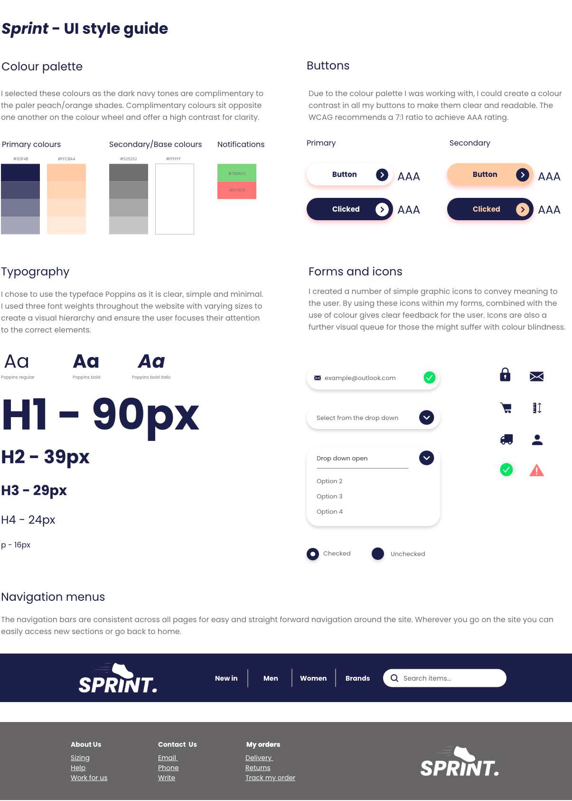

Sprite Website Mock-ups
I created my website using Adobe XD and considered many factors in my design process to ensure a positive user experience through the implementation of a high quality user interface with cohesive branding across all pages. I ensured that my website would be accessible in accordance with the Web Content Accessibility Guidelines (WCAG) to ensure it is perceivable, operable, understandable, robust and responsive. This was achieved through the implementation of principles such as visual hierarchy, colour science, typography and imagery. The below UI style guide demonstrates these principles
I have displayed images of my mockups below, however, the full pdf version and XD files can be downloaded separately so they the can be seen at a higher specification. There is a web, tablet and mobile version of each page. Download XD files here

Landing Page

Product Page

Login/Registration Page